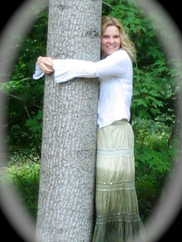

Jester-Knight
Literature
Film
Music
Visual Art
Tributes
Submissions
Links
Contact
Tonya Madia

Biography
Tonya’s interest in art began at a young age. Watching her father and grandmother create beautiful oil paintings inspired her to express herself through art and she has been doing so ever since. She has been designing and crafting cloth dolls for over ten years. Tonya recently discovered the joy of crafting the classic Rockford Sock Monkey and started Sock-O-Grams, a Sock Monkey greeting business. She is currently collaborating with artist Nick Pendleton on an inspirational Sock Monkey–themed pocket book.
Tonya has appeared onstage in the challenging and divergent roles of Bella in Lost in Yonkers and Candy Starr in One Flew Over the Cuckoo’s Nest, and as an extra in such films as Jerry Maguire, Invasion and No Code of Conduct.
In 2004 she played a mother in the midst of divorcing her husband in Keep It Together, a student film by Jeff Taylor.
She is also co-writer of the book for the award-winning short musical The Think it Thru Revue, which toured the southwest United States promoting abstinence and teen pregnancy prevention.
Click below for Tonya's work
The Dream (.pdf) NEW!!
Goodbye Again (.pdf)
Alice (.pdf)
Beauty Is Your Name (.pdf)
Mary Rose (.pdf)
Neary Quinn (.pdf)